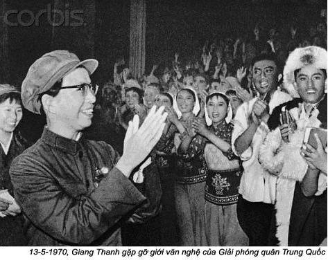
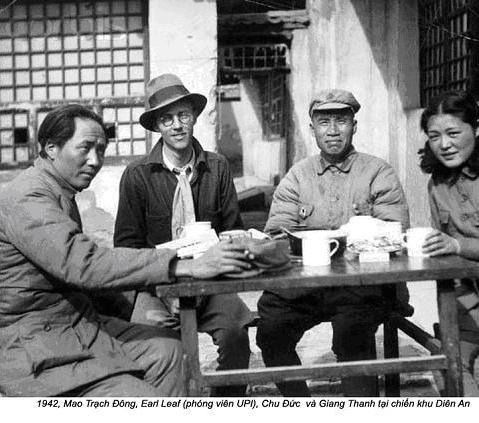
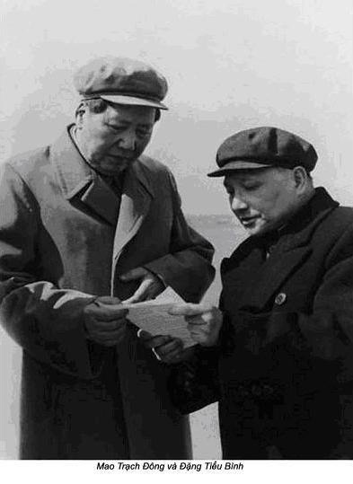

Chương 1

hủ tịch gọi tôi phải không ạ?
Mao cố gắng mở mắt và mấp máy đôi môi, nhưng không nổi. Chiếc mặt nạ truyền oxygen trượt khỏi mặt, ông lại bị ngạt. Tôi ghé sát ông, nhưng chỉ có thể nghe thấy: “A…a…a…”. Ông vẫn tỉnh, nhưng hầu như không thể nói được gì nữa.
Trong những năm ấy, tôi, bác sĩ riêng của lãnh tụ, phụ trách mười sáu bác sĩ giỏi nhất Trung Quốc với hai mươi bốn y tá dày dạn kinh nghiệm. Chúng tôi được trao nhiệm vụ cứu sống Mao. Trong hơn hai tháng, kể từ ngày 26-6-1976 Mao bị nhồi máu cơ tim lần thứ hai, từ lúc ấy chúng tôi không rời Mao nửa bước. Quanh giường ông, luôn luôn có ba bác sĩ và tám y tá túc trực ngày đêm. Chưa kể hai bác sĩ tim mạch theo dõi cẩn thận điện tim ông từng phút. Đội ngũ bác sĩ thay phiên nhau trực 24/24, mỗi ca trực 8 tiếng, tuy vậy tôi thường xuyên vẫn phải có mặt. Phòng làm việc của tôi là buồng xép chật chội, cạnh phòng điều trị của Chủ tịch, tôi ngủ không quá ba, bốn tiếng một ngày.
Nhân dân Trung Quốc hoàn toàn không biết gì về tình trạng ốm đau của lãnh tụ kính yêu của mình. Tuy nhiên các ảnh trên mặt báo, thường hiếm khi in những tấm ảnh các cuộc gặp của Mao với những người lãnh đạo nước ngoài. Dù rằng báo chí Trung Quốc loan tải khắp thế giới về sức khoẻ tốt của Mao, trong tấm ảnh chụp với thủ tướng Lào, Kaysone Phoumivan vào tháng 5-1976 Chủ tịch trông lờ đờ như một cụ già mệt mỏi. Tuy thế, sang ngày 8-9-1976 hàng trăm triệu nhân dân xuống đường tuần hành hô vang khẩu hiệu “Mao chủ tịch muôn năm”.
Tuy nhiên, đối với những người trải qua những đêm trong phòng bệnh của ông, hiểu rằng Mao Trạch Đông chỉ còn sống một vài giờ thậm chí vài phút thôi. Mao đột quỵ từ tháng Sáu, nhiều uỷ viên bộ chính trị thường xuyên có mặt. Họ túc trực từng cặp ứng theo cấp bậc, vị trí chính trị và được thay đổi 12 giờ một lần. Trong số những người này có ông phó của Mao – người thuộc phái ôn hoà Hoa Quốc Phong, phái cực đoan Vương Hồng Văn, ngoài ra còn có cả các Uỷ viên Bộ chính trị – phái ôn hoà Uông Đông Hưng và phái cực đoan Trương Xuân Kiều.
Hoa Quốc Phong chịu trách nhiệm mọi hoạt động cấp cứu Chủ tịch. Ông thành kính tôn sùng Mao, thường xuyên hỏi han sức khoẻ. Lắng nghe báo cáo của các bác sĩ, ông tin người ta đã làm tất cả những gì có thể để kéo dài cuộc sống của lãnh tụ. Khi chúng tôi đề nghị hồi sức nhân tạo cho chủ tịch bằng các phương pháp mới đôi khi gây đau đớn như cho ống xông qua đường mũi bơm thức ăn vào dạ dày, Hoa Quốc Phong là người duy nhất muốn thử ngay phương pháp này lên chính ông ta. Tôi rất quý Hoa Quốc Phong. Tính liêm khiết, sự thẳng thắn quả là hiếm hoi trong số những người lãnh đạo đảng dính líu đến tham nhũng, thối nát.
Lần đầu tiên tôi gặp Hoa Quốc Phong vào năm 1959, trong thời kỳ Đại nhảy vọt. Khi đó tôi cùng với Mao về quê hương ông ở Thiếu Sơn tỉnh Hồ Nam. Hoa Quốc Phong khi ấy là bí thư đảng ở Tương Đàm. Sau hai năm, chính sách Đại nhảy vọt đã đẩy đất nước vào khủng hoảng kinh tế, tuy vậy chính quyền địa phương vẫn tiếp tục vẫn báo cáo lên về sự tăng trưởng sản xuất nông nghiệp và chỉ có Hoa Quốc Phong duy nhất dám dũng cảm công khai nói rằng không những chỉ sức người và gia súc mà cả đất đai cũng bị kiệt cạn, tất cả các báo cáo về tăng trưởng sản xuất là sự nói dối trắng trợn.
- Không một ai, ngoài Hoa Quốc Phong, nói cho tôi tất cả sự thật – Mao nhận xét như thế.
Hoa Quốc Phong trở thành người thay thế Mao vào tháng 4-1976, khi ông chiến thắng trong cuộc đấu đá giành quyền lực các phe cánh khi họ biết Mao sắp qua đời.
Tháng giêng 1976, Mao bổ nhiệm Hoa Quốc Phong chức vụ quyền thủ tướng Quốc vụ viện Cộng hoà nhân dân Trung Hoa thay cho Chu Ân Lai đã qua đời, giải quyết mọi công việc chính phủ. Đầu tháng tư, hàng trăm nghìn người Bắc Kinh đã tụ họp nhau trên quảng trường Thiên An Môn tưởng nhớ vị thủ tướng vừa mất Chu Ân Lai và bày tỏ sự phẫn nộ của mình bởi những hoạt động của Giang Thanh cùng nhóm chiến hữu Thượng Hải của bà là Trương Xuân Kiều, Diêu Văn Nguyên, Vương Hồng Văn. Cuộc biểu tình đã bị chính quyền buộc tội “phản cách mạng”. Để làm vừa lòng những nhà cách mạng vây quanh vợ mình, Mao buộc tội bài phát biểu của Đặng Tiểu Bình trước quần chúng.

Mao luôn luôn có xu hướng cân bằng lực lượng tả khuynh và hữu khuynh, trong hàng ngũ lãnh đạo cao cấp bằng cách bổ nhiệm người trợ lý của mình là Hoa Quốc Phong. Như vậy, Hoa Quốc Phong không những trở thành người đứng đầu chính phủ, còn là người thừa kế Mao ở vị trí người đứng đầu đảng cộng sản Trung Quốc. Tôi vui mừng vì điều này, xem quyết định của Chủ tịch rất khôn ngoan. Thậm chí bản thân Giang Thanh cũng tán thành quyết định, nói, cuối cùng lãnh tụ hành động sáng suốt. Tuy nhiên những người cực đoan buộc tội Hoa Quốc Phong là “hữu khuynh”.
Do vẫn bị công kích, ngày 30 tháng 4 năm 1976 Hoa Quốc Phong nói với Mao rằng ông không thể giữ nổi vị trí vì sự đả kích thường xuyên và nhục mạ từ nhóm Giang Thanh. Sau cuộc hội đàm với Chủ tịch, Hoa Quốc Phong cho tôi xem một số văn bản. Lúc ấy Mao nói năng rất khó khăn, phải nhờ người khác viết hộ. Mao viết cho Hoa Quốc Phong như sau:
“Khi đồng chí ở chính quyền, tôi yên tâm. Hãy hành động với nhiệm vụ được giao. Phải tự tin và đừng lo ngại”.
Sau khi Mao qua đời, với bằng chứng giấy trắng mực đen, tài liệu trên mở đường cho Hoa Quốc Phong trở thành người thừa kế.
Sau nửa đêm 8-9-1976, các bác sĩ lại cố gắng kích thích hoạt động tim của Mao. Do tiêm vào người Mao một chế phẩm từ nhân sâm, vì vậy huyết áp nâng lên từ 86/66 lên 104/72 gần như tới mức bình thường và mạch đập ổn định chút ít, tuy nhiên tôi hiểu, huyết áp tăng giả tạo, không kéo dài lâu được.
Sau khi tiêm, Hoa Quốc Phong kéo tôi lại bên thì thầm, không muốn Trương Xuân Kiều, Uông Đông Hưng, hai uỷ viên bộ chính trị đứng gần đấy nghe thấy:
- Bác sĩ Lý, liệu chúng ta có thể làm một cái gì đó khác được không?
Tôi không nói gì cả, bản thân thủ tướng hiểu, đó là chấm hết. Tôi không thể dũng cảm nói từ “chết”.
Phòng bệnh lặng như tờ. Tôi ngước mắt nhìn Hoa Quốc Phong. Không gian câm lặng, chỉ nghe thấy tiếng máy hô hấp nhân tạo phát ra tiếng động đều đều theo nhịp thở. Tôi lắc đầu, thì thầm lo lắng:
- Chúng tôi đã làm tất cả những gì có thể làm được.
Hoa Quốc Phong quay sang người đứng cạnh, Uông Đông Hưng, trưởng ban tổ chức Ban chấp hành trung ương đảng cộng sản Trung Quốc, cựu trưởng ban bảo vệ Mao, nói:
- Mời đồng chí Giang Thanh và các Uỷ viên Bộ Chính trị ở Bắc Kinh cấp tốc lại đây, đồng thời thông báo cho các Uỷ viên Bộ Chính trị toàn quốc phải về ngay thủ đô họp.
Uông Đông Hưng gặp Mao lần đầu tiên ở Diên An và từng hàng chục năm phụ trách an ninh, một trong số người thân cận, gần gũi nhất của chủ tịch.
Sau khi Uông Đông Hưng đi khỏi, cô y tá chạy đến tôi, nói Trương Ngọc Phượng thông báo ý muốn của Chủ tịch muốn gặp tôi. Trương Ngọc Phượng trước đây là người phục vụ trên đoàn tàu hoả đặc biệt dành cho Mao đi thăm trong nước, bây giờ cô ấy vừa là thư ký riêng, vừa là bạn gái tin cẩn của ông.
Lần đầu tiên tháp tùng Mao, tôi thấy cô ta ở Trương Sa trong buổi dạ hội do Mao tổ chức. Trương Ngọc Phượng lúc ấy, một cô gái mười tám tuổi, có đôi mắt to ngây thơ, làn da trắng nõn. Cô đã mời Mao nhảy sau đó Mao đưa cô về phòng mình, họ qua đêm ở đó. Quan hệ tình cảm của họ một thời bàn tán ồn ào, tuy nhiên bên Mao còn có nhiều cô gái khác. Thậm chí giờ đây vẫn còn hai cô vũ nữ trẻ đang làm y tá phục vụ xoa bóp cho Mao không chính thức. Nhưng Trương Ngọc Phượng ở gần Mao lâu hơn các cô khác, mặc dù có những cử chỉ vụng về và thói thích rượu, nhưng cô vẫn giữ được sự ưu ái của lãnh tụ.

Năm 1974, sau khi thư ký của Mao, Tô Dạ Phú mắc bệnh ung thư phải nằm viện, Trương Ngọc Phượng thay vào đó. Cô ta xử lý các thư tín hàng ngày gửi đến Chủ tịch, sau này khi thị lực Mao giảm đi, cô đọc cho ông một khối lượng lớn tài liệu, viết tốc ký lời bình và chỉ thị. Cuối năm ấy, Uông Đông Hưng chính thức tin tưởng giao Trương Ngọc Phượng giữ cương vị thư ký riêng của Mao.
Với tư cách bác sĩ riêng, tôi có thể rẽ vào phòng Mao bất kỳ lúc nào, còn tất cả mọi người phải được phép của Trương Ngọc Phượng. Sau năm 1974 ngay cả Giang Thanh, vợ Chủ tịch và các uỷ viên Bộ chính trị muốn vào phòng của lãnh tụ cũng phải có sự đồng ý của Trương Ngọc Phượng, buộc phải chịu đựng tính khinh khỉnh của cô. Một hôm vào tháng 6-1976, Hoa Quốc Phong đến, muốn gặp Mao, nhưng Trương Ngọc Phượng đang nghỉ trưa, ấy thế ông cũng không dám đánh thức cô ta. Hai giờ đồng hồ trôi qua, Trương Ngọc Phượng cũng chưa đến làm việc, vì thế thủ tướng Quốc vụ viện Cộng hoà nhân dân Trung Hoa, vị tư lệnh chỉ đứng sau chức của Chủ tịch đành phải ra về, không được hội kiến. Vào đầu năm ấy, Đặng Tiểu Bình ốm, cộng thêm sự công kích của phe đối lập, làm gia đình ông xẻ đàn tan nghé. Đặng Dung, con gái út của Đặng Tiểu Bình viết cho Mao bức thư cầu khẩn lãnh tụ cho phép cô được sống với bố, lá thư ấy Trương Ngọc Phượng không chuyển cho Mao, cô con gái bất hạnh ấy không nhận được quyết định cho phép quay về sống với bố.
Trong những năm cuối đời, chỉ có Trương Ngọc Phượng mới nghe và hiểu được lời nói lủng củng, đầy mâu thuẫn của ông, thậm chí cô ta còn phiên dịch lời của Chủ tịch cho tôi.
Khi tôi lại gần giường của vị lãnh tụ sắp qua đời, Trương Ngọc Phượng hỏi:
- Bác sĩ Lý, liệu Chủ tịch còn hy vọng nào không?

Một cách khó khăn Mao khẽ gật đầu, từ từ chìa tay phải nắm tay tôi. Tay của ông yếu lắm, mạch đập khó bắt, cằm xệ xuống, da đã xạm dần. Cái nhìn của ông không còn có sức sống, chỉ còn lại sự mệt mỏi của người sắp chết. Đường ghi điện tim gần như phẳng.
Mao được thu xếp đưa vào buồng này trong toà nhà 202 ở Trung Nam Hải sáu tuần trước đó, 28 tháng sáu 1976. Trong những ngày ấy ở phía đông Trung Quốc có trận động đất lớn phá huỷ hoàn toàn thành phố Đường Sơn, cách Bắc Kinh khoảng 100 dặm, làm chết hơn 250 nghìn người. Chính ngay tại thủ đô, nạn nhân tuy không nhiều, nhưng nhà cửa cũng bị phá huỷ đáng kể, mọi người lo sợ những trận động đất kế tiếp nên hàng triệu người đã phải tự dựng lều sống trên đường phố. Nơi Mao nằm điều trị ngay sát phòng làm việc và bể bơi, từ thời Cách mạng văn hoá, trong dinh thự cũng bị đổ vỡ nhiều vì thế chúng tôi buộc phải chuyển ông vào chỗ an toàn hơn.
Khu dinh thự 202 là lựa chọn duy nhất, nơi lãnh tụ nằm, nối liền với toà nhà chính bằng một hành lang. Dinh thự được xây cất đặc biệt cho Mao vào năm 1974, có thể chịu được động đất mạnh. Buổi chiều hôm chuyển đi, có một trận chấn động mạnh trong khi trời mưa tầm tã, ấy thế ở dinh thự 202 không thấy dư chấn. Bầu trời dường như sắp sập xuống, nhưng tôi chẳng để ý – chúng tôi cần phải tập trung, giành giựt cuộc sống Mao chủ tịch.
Hoa Quốc Phong, Trương Xuân Kiều, Vương Hồng Văn và Uông Đông Hưng đến sát giường lãnh tụ. Sau tấm bình phong tôi nghe thấy cả từng bước chân nhẹ nhàng bước vào. Phòng đầy người, tổ trực đêm của bác sĩ và y tá đang chuẩn bị thay ca.
Tôi kiểm tra mạch, đứng sau tôi, bốn uỷ viên Bộ Chính trị. Bất ngờ Giang Thanh giận dữ bước vào phòng, gào lên:
- Ai là người sẽ nói cho tôi biết cái gì đang xảy ra ở đây?
Giang Thanh, người vợ thứ tư của Mao, nếu tính cả lần ông tảo hôn do ép buộc của gia đình mà ông từ chối. Mao cưới Giang Thanh ở Diên An năm 1938. Người ta kể cho tôi rằng, khi đó bà ta còn có mối quan hệ thân thiết với người đàn ông khác cũng ở Diên An. Nhưng sau 1949, vai trò thụ động của vợ lãnh tụ vĩ đại làm Giang Thanh buồn bực, bà hay cáu kỉnh, đòi hỏi quá nhiều. Chỉ trong những năm Cách mạng văn hoá bà mới được xuất hiện và thành Uỷ viên Bộ Chính trị, bà tàn nhẫn với tất cả những ai ngăn cản con đường danh vọng. Hai người sống ly thân trong nhiều năm, tuy nhiên Mao không có ý định ly dị Giang Thanh, nếu làm thế, ông không tránh khỏi phải cưới một trong số người tình, điều ông không muốn. Trong những năm Cách mạng văn hoá, Giang Thanh chuyển đến ở một biệt thự lớn ở Điếu Ngọc Thái, nhà khách của chính phủ, nơi khách cao cấp nước ngoài nghỉ chân. Sau cơn đau tim của Mao, Giang Thanh trở lại Trung Nam Hải, sống trong dinh Xuân-Sen.
Bà không dễ dàng chấp nhận ảnh hưởng của Trương Ngọc Phượng đối với Mao, nhưng cuối cùng đành chịu vì biết lợi dụng người phiên dịch phục vụ cho ông chồng ốm đau của mình. Căn bệnh nặng, sự sắp qua đời của Mao là cú đòn nặng với Giang Thanh. Bà lo quyền lực của bà sẽ biến theo gót chân ông và cũng trong thời gian ấy trong tâm khảm bà nuôi niềm hy vọng thay chỗ chồng.
Hoa Quốc Phong cố an ủi:
- Đồng chí Giang Thanh – Hoa lịch sự nói – Chủ tịch đang nói chuyện với bác sĩ Lý.
Tôi an ủi, động viên Mao, mặc dù trạng thái của ông thật vô vọng. Ông bắt đầu xuống sức nhiều năm qua. Từ tháng Chín 1971, chấn động bởi sự phản bội của Lâm Bưu, một người bạn cũ, một người phó duy nhất, người kế thừa sự nghiệp, bạn chiến đấu sát cánh đã trở mặt lật đổ Mao. Âm mưu đảo chính bất thành, Lâm Bưu cùng vợ và con trai quyết định bay sang Liên Xô. Tuy nhiên máy bay hết nhiên liệu, rớt tại Under Khan, vùng ngoại Mông. Tổ lái và gia đình Lâm Bưu đã chết. Sự việc tác động mạnh đến Mao. Ông bị suy sụp, chán nản, các cơn mất ngủ giày vò dẫn ông đến bệnh tật.
Cuộc viếng thăm lịch sử của tổng thống Hoa Kỳ đến Trung Quốc, Richard Nixon, vào tháng Hai 1972. Dù bệnh nặng Mao liên tục từ chối bác sĩ chăm sóc, chỉ ba tuần lễ trước khi tổng thống Mỹ tới, Chủ tịch cuối cùng mới chịu chữa bệnh. Thể trạng của ông xấu trầm trọng không có khả năng hồi phục hoàn toàn. Khi Nixon đến. Mao yếu lắm, nói năng rất khó. Bệnh viêm phổi của Mao chưa hồi phục, lại kèm thêm bệnh tim mạch. Nhưng Mao tự cho rằng đủ sức khoẻ tiếp khách. Để tiếp Richard Nixon tại dinh, Mao cần tôi. Tôi đón tổng thống Nixon trước dinh thự của Mao, đưa tổng thống vào phòng làm việc, qua phòng nghỉ, qua hành lang sát phòng khách, tôi đứng sau cánh cửa phòng tiếp khách nghe rõ cuộc trò chuyện giữa hai người, đồng thời chuẩn bị bất kỳ lúc nào có tín hiệu sẽ thuốc thang ngay cho lãnh tụ.
Cơ thể ở ông già 83 tuổi đã xuất hiện nhiều bệnh. Nhiều năm nghiện thuốc lá phá hỏng hai lá phổi. Lại còn thường xuyên bị bệnh viêm phế quản, viêm phổi dày vò. Các lá phổi bị xơ cứng mất tính đàn hồi, Mao thở khó khăn và ho nhiều. Phổi trái thực tế không làm việc, nên để dễ thở và nói bình thường Mao chỉ có thể nằm nghiêng sang trái. Tôi thường phải sử dụng mặt lạ oxygen, còn trong trường hợp nặng dùng máy hô hấp nhân tạo của Mỹ do Henry Kissinger gửi sang sau chuyến thăm bí mật Trung Hoa năm 1971.
Nhiều chuyên gia y tế nước ngoài cho rằng Mao mắc chứng bệnh Parkingson. Tuy nhiên năm 1974 các bác sĩ Trung Quốc phát hiện ra chẩn đoán sai, ông có căn bệnh nan y hiếm gặp, hoại tử tế bào thần kinh vận động trong vỏ não, làm liệt từng bộ phận cơ thể. Sự phát triển của bệnh làm ông mất khả năng nói và nuốt cho nên phải bơm thức ăn qua đường mũi. Trương lực cơ giảm, thở rất khó khăn. Cơ thể liên tiếp bị viêm nhiễm nhẹ. Do thiếu thuốc đặc hiệu, người bệnh sẽ chết một vài năm sau khi phát hiện.
Bệnh tình của Mao phát triển như các chuyên gia dự đoán. Nhưng ở thời điểm nói trên căn bệnh quái ác này ảnh hưởng xấu tới tim. Cơn nhồi máu cơ tim đầu tiên của Mao vào tháng 5-1976. Điều này xảy ra khi cãi nhau với Trương Ngọc Phượng. Cơn tiếp theo vào ngày 26 tháng sáu, cơn thứ ba – 2 tháng 9. Tất cả bác sĩ hiểu rằng cái chết rất gần nhưng để nói ra được điều này, đòi hỏi phải vô cùng dũng cảm. Tuy vậy, cơ thể của lãnh tụ vẫn chưa chịu đầu hàng.
- Mọi thứ bình thường, thưa Chủ tịch – tôi nói, nắm tay ông – chúng tôi đang hết sức cố gắng.
Trong khoảnh khắc, mắt Mao xuất hiện một tia hy vọng. Tôi thậm chí còn thấy má ông hơi hồng lên chút ít, rồi Mao thở hắt ra, mắt nhắm lại, bàn tay phải không còn sự sống nữa tuột khỏi tay tôi. Đường điện tim phẳng lỳ. Tôi liếc đồng hồ, lúc 0 giờ 10 phút. Bắt đầu một ngày mới – 9 tháng 9 năm 1976.
Tôi không đau buồn khi ông qua đời. Hơn hai mươi năm tôi hàng ngày ở bên cạnh Mao, tháp tùng ông trong các chuyến đi, kiên trì giúp ông trong những hội nghị dài. Đối với Mao, tôi không những bác sĩ riêng còn là người tin cẩn. Ông tâm tình với tôi chuyện riêng tư, các điều bí mật chính trị. Tôi có thể còn gần gũi hơn cả Uông Đông Hưng, người bảo vệ tin cậy của ông.
Trong những năm đầu, tôi ngưỡng mộ Mao. Ông đã cứu Trung Hoa khỏi ách đô hộ Nhật Bản, được coi như sứ giả của Trời. Nhưng trong những năm Cách mạng văn hoá ước mơ của tôi về nước Trung Hoa mới, về tự do, không bị đàn áp và công bằng đã tan thành mây khói. Tôi không tin vào lý tưởng chủ nghĩa cộng sản, mặc dù tôi là đảng viên đảng cộng sản Trung Quốc. Nhìn vào điện tâm đồ đang chạy một đường thẳng nhịp tim “Người cầm lái vĩ đại”, tôi cảm thấy kết thúc một kỷ nguyên và hiểu rằng ngôi sao của Mao đã tắt. Một ý nghĩ xâm nhập đầu tôi, tôi thấy kinh sợ. Cái gì đang chờ tôi? Một bác sĩ riêng của Mao, sống trong lo âu, sợ hãi từ nhiều năm.
Nhìn vào xác lãnh tụ không còn linh hồn và bộ mặt những người đang đứng xung quanh, tôi hiểu, họ cũng đang tính toán số phận của mình. Cuộc sống ở Trung Nam Hải luôn luôn ẩn nấp sự nguy hiểm, giờ đây tôi bỗng thấy nó tiến gần đến. Giang Thanh nhìn xoáy vào tôi, nói vỗ mặt:
- Các người đang làm cái gì thế? Anh phải chịu hoàn toàn trách nhiệm!
Lời buộc tội của Giang Thanh không làm tôi ngạc nhiên. Giang Thanh nổi tiếng mưu mô, tàn ác. Quan hệ giữa chúng tôi bắt đầu vẩn đục từ hai mươi năm trước, bốn năm gần đây càng xấu đi, năm 1972, thậm chí Giang còn buộc tội tôi là gián điệp.
Hoa Quốc Phong xen vào, chậm chạp đi về phía bà, từ tốn nói:
- Tất cả mọi việc diễn ra trước mắt chúng tôi. Các đồng chí bác sĩ đã làm tất cả mọi cái có thể.
Vương Hồng Văn xác nhận lời thủ tướng:
- Tất cả bốn chúng tôi không dời khỏi Mao chủ tịch nửa bước.
Nói xong mặt ông đỏ dần lên. Vương Hồng Văn, người trẻ nhất trong số Uỷ viên Bộ Chính trị, đôi khi người ta gọi đùa là “tên lửa” do việc thăng tiến quá nhanh. Từ một nhân viên quèn bộ phận an ninh nhà máy ở Thượng Hải, ông leo đến đỉnh cao quyền lực chính trị. Không ai có thể hiểu sự ưu ái của Mao với con người trẻ này, vì sao cất nhắc anh ta thăng tiến nhanh như thế. Vương Hồng Văn, gầy gò, cũng đáng yêu vì cái dáng thông minh nhưng thiếu tự tin. Vất vả lắm ông mới học xong trung học, trông ông chẳng có dáng dấp lãnh tụ. Vương chẳng đóng góp, chẳng có ích trong ban lãnh đạo Trung Hoa. Vào tháng 5, sau khi sức khoẻ Mao xấu đi đột ngột, Vương Hồng Văn nói với tôi, đề nghị cho Mao dùng ngọc trai đã chế biến thay cho thuốc. Nhưng tôi bác bỏ đề nghị, lãnh tụ cũng không được uống thuốc ngọc trai.
Mao chết trong phiên trực của Vương Hồng Văn, nhưng ngoài phiên trực hiếm khi có mặt vì còn bận săn thỏ gần một sân bay quân sự bí mật Tây Uyển. Phần đông thời gian rỗi ông xem phim nhập từ Hong Kong. Tôi ngờ, Vương Hồng Văn trước đây không phải người tử tế, giờ đây quyền lực làm ông thoái hoá thêm.
- Bác sĩ đã báo cáo cho chúng tôi tất cả rồi – Vương Hồng Văn bào chữa với Giang Thanh – Chúng tôi biết rất rõ từng diễn biến.
Giang Thanh cắt ngang:
- Nhưng vì sao người ta không báo cho tôi sớm hơn?
Đó là một câu hỏi mánh khóe, thủ đoạn. Giang Thanh thường xuyên nhận được báo cáo về sức khoẻ của chồng, nhưng lại buộc tội bác sĩ thổi phồng bệnh tật, không tin lời các phần tử tư sản. Ngày 27-8 chúng tôi chính thức thông báo cho bà về tình trạng sức khoẻ nguy kịch của Mao, nhưng bà phớt lờ, vẫn đi “thanh tra” ở Đại Trại, nơi bà chỉ đạo một công xã nông nghiệp kiểu mẫu. Hoa Quốc Phong đã thông báo khẩn cấp cho Giang Thanh ngày 5 tháng 9, nhưng khi trở về chẳng thèm hỏi thăm tới sức khoẻ chồng, chỉ than vãn quá mệt mỏi sau chuyến công tác.
Ngày 7 tháng 9 sức khoẻ của lãnh tụ đã trở nên quá xấu, Giang Thanh buộc phải gặp các bác sĩ. Bà bắt tay từng người, nói “Đây là vinh dự lớn lao và hạnh phúc cho các đồng chí đấy”. Giang Thanh gần như tin chắc sẽ thay thế chỗ Mao, nghĩ chúng tôi hoàn toàn hài lòng dưới sự lãnh đạo của bà.
Một số bác sĩ lần đầu tiên gặp rất ngạc nhiên về thái độ lạnh lùng, tính nhẫn tâm của Giang. Uông Đông Hưng có lần nói với tôi “Không có gì đáng ngạc nhiên cả, Chủ tịch, vật cản duy nhất trên đường nắm quyền tối cao của bà ta”. Giang đã chờ đợi cái chết của Mao từ lâu. Cuộc đấu đá tranh giành quyền lực càng căng thẳng theo từng phút sống của Mao chủ tịch.
Giang Thanh cầm đầu nhóm cực đoan trong đảng, gồm Trương Xuân Kiều, Vương Hồng Văn, Diêu Văn Nguyên, Mao Viên Tân – cháu Mao, Trương Xuân Kiều, một “lý thuyết gia” gốc Thượng Hải có quan điểm tả khuynh, nhà tư tưởng chủ chốt của Cách mạng văn hoá. Ông thích lặp lại câu nói “Cỏ dại của chủ nghĩa xã hội còn quý hơn cao lương chủ nghĩa tư bản”. Bây giờ thấy Giang Thanh giận dữ, Trương Xuân Kiều cúi mặt nhìn xuống sàn nhà, chắp tay sau lưng, lo lắng.